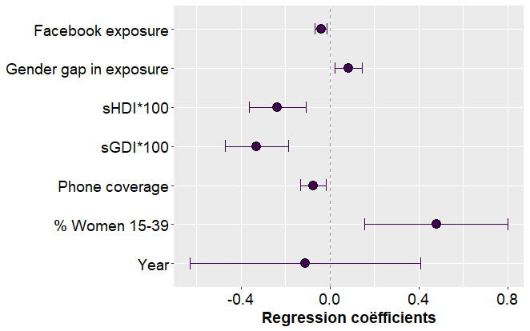

SSA's background of high birth rates
The birth rates in sub-Saharan African (SSA) countries are among the highest in the world. At the same time, their infrastructure is among the poorest in the world which results in the existence of many communities that are hard to reach. As such, individuals living in these remote communities hardly receive information and ideas regarding fertility behavior from outside their community.
This spread of information and norms about fertility behavior are a key element in determining a person's fertility behavior, like the number of children one get, following diffusion theories.
As such, diffusion theories predict that if the norm exists to give birth to a high number of children, as is the case in many communities in SSA, birth rates are likely to remain high due to the poor quality of SSA's infrastructure.
Sub-national birth rates in SSA
 Estimated Crude Birth Rates in 2019
Estimated Crude Birth Rates in 2019
One type of infrastructure, the digital infrastructure, showed a rapid expansion in most recent years. Over 90% of the Africans had access to a mobile phone and almost 30% was connected to the internet in 2020.
The digital infrastructure enabled the use of social media. A key characteristic of social media is digital social interactivity between its users.
As social media transcends physical community borders easily, it has the potential to expose individuals to fertility information and norms on a global scale. The receiving of information and norms is thus no longer restricted to one's community.
As such, social media potentially serves as an important medium to influence birth rates in SSA, but to what extent this is happening is yet not known.
Sub-national Facebook exposure in SSA
 Observed % with a Facebook account in 2021
Observed % with a Facebook account in 2021
Research Questions & Hypotheses
To what extent is social media exposure associated with birth rates in subnational regions in SSA?
H1: Higher Facebook exposure relates with lower subnational birth rates.
To what extent is social media exposure of men versus women associated with birth rates?
H2: When women are more exposed to social media in comparison to men, we expect lower subnational birth rates.
Higher Facebook exposure in low birth rate regions
 Descriptive relations between crude birth rates and the included variables
Descriptive relations between crude birth rates and the included variables
To create subnational social media indicators, we used Facebook’s advertisement platform. Facebook allows their users to search the number of active Facebook users in last month disaggregated by various geographic and demographic characteristics (detailed information
can be found here). We created active users estimates for individuals aged 15-39 over 311 subnational regions in 29 SSA countries.
We combined the Facebook data with data from the DHS and MICS surveys to create subnational crude birth rates, and with data from the World Bank
and the Afrobarometer to create the independent variables. We used multilevel and OLS regression models to test the relation between birth rates and social media exposure.
The results reveal that higher social media exposure and smaller gender gaps in exposure are significantly associated with lower birth rates.

We find that social media exposure relates to lower birth rates in SSA. A possible explanation is that social media enable their users to form (online) communities in which information and ideas can be spread irrespective of individuals' place of living. But, we cannot exclude that individuals who had already different norms and values are more likely to be exposed to social media.
Future thoughts and research are required to disentagle the mechanisms that explain the association between social media and birth rates. Understanding what is going on is urgent as social media is becoming more and more prevalent, and we showed that this could have real consequences in terms of birth rates and thus as well population growth.